Complete user manual — design, price, render, and report
1. The interface
CabDesign has four views, switched with the tabs at the top center:
Walls (front elevations), Top View (the floor plan),
3D (an orbitable rendering), and Report (a printable estimate).
The top-right of the toolbar holds the global controls: door style,
finish color, Pricing, Settings, and
Save / Open / New.
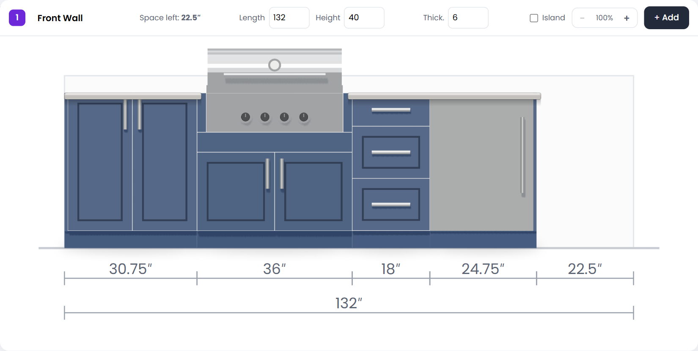
The Walls tab — one elevation card per wall, with live dimensions and a per-segment breakdown along the bottom.
Your work autosaves to the browser, so you can close and come back to it.
2. Starting a design
Type a Project name (and optional Client) in the top-left fields.
Pick a door style — Shaker (groove) for the routed-groove HDPE look (called Vibe on the report), or Euro / flat for a plain slab (called Euro).
Pick a finish color from the Starboard ST palette (Black, Mocha, Nutmeg, Indigo, Slate, White/White, and more).
TipThe door style and finish apply to the whole design and update every view instantly.
3. Walls & runs
Each wall is a card on the Walls tab. In the card header you can rename it and set its
Length, Height, and Thickness. Click any field and type a value
(it commits when you press Enter or click away; values round to the nearest ¼″).
+ Add wall / run adds another wall. With 2+ walls you can switch the layout shape from the Top View.
Set Thickness to 0 (or tick Island) to make an invisible island run.
The zoom control in the card header lets you magnify a long wall and scroll along it.
4. Adding cabinets
Click + Add on a wall card to open the catalog. Cabinets are grouped into tabs: Base, Wall, Tall, Outdoor Kitchen, Fillers & Trim, and Appliances. Every tile is a live 3D preview in your chosen finish and door style.
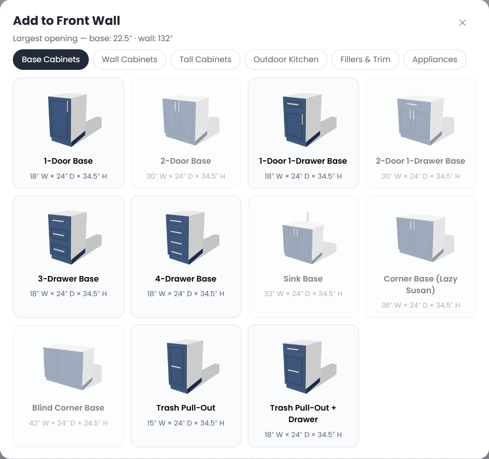
The catalog picker. The header shows the largest opening available on the wall.
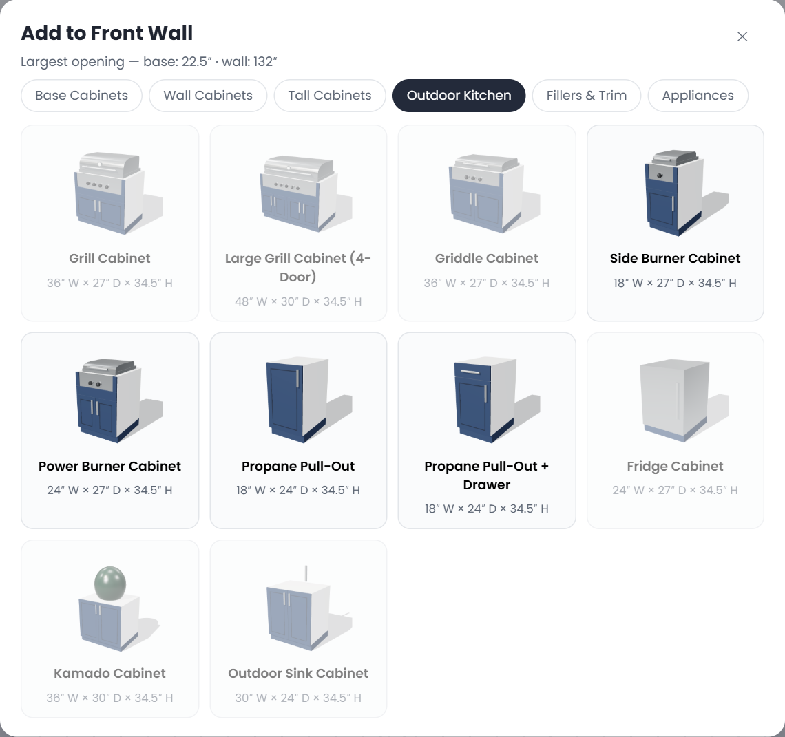
The Outdoor Kitchen tab — grill, griddle, side & power burners, propane pull-outs, fridge, kamado, and sink cabinets. A grill or griddle cabinet widened past 41″ automatically becomes its large 4-door version (and back).
Auto-fitIf a cabinet's default width won't fit, it's added at the largest width that does fit (down to its minimum). A cabinet is dropped into the largest open gap on the wall, so removing a cabinet in the middle of a run leaves a gap you can fill.
5. Editing a cabinet
Click a cabinet (in the Walls or Top View) to open its editor. Use the −/+ steppers or type a value directly.
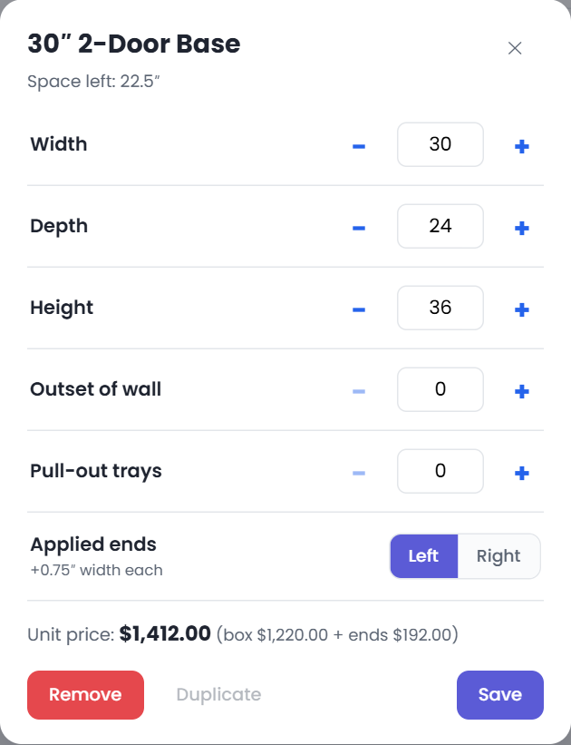
The cabinet editor, with the live price broken down at the bottom.
Width / Depth / Height — within the cabinet's allowed range (see Settings). Arrows step 1″; typing accepts any ¼″ value.
Pull-out trays — up to 2, on 1-door, 2-door, 1-door-1-drawer, and 2-door-1-drawer cabinets ($159 each).
Applied ends — finished end panels on the Left/Right (adds 0.75″ to the width each). See Applied panels.
Hinge side — flips the door/handle for single-door cabinets and blind corners.
Outset of wall — pulls the cabinet off the wall (fillers compute this automatically).
Duplicate copies the cabinet next to itself; Remove deletes it.
1-door, 2-door, open shelf (mounted above the counter)
Tall
pantry, utility / broom
Outdoor Kitchen
grill, griddle (each auto-converts to a large 4-door version (+$100) when wider than 41″), side burner, power burner, propane pull-out, propane pull-out + drawer, fridge, kamado, outdoor sink
Fillers & Trim
base filler, wall filler (1″–8″, $10/in), end-cap support cabinet
Appliances
freestanding grill, kamado on cart, pizza oven (visual only — not priced)
Grill, griddle, and burner cabinets are drawn as proper drop-ins: the appliance sets into the top of the cabinet with an apron and doors below, and the countertop stops at each side.
End-cap support cabinetUse this to support the countertop where a fridge would otherwise be the last unit in a run — countertops need support, and a fridge alone can't provide it.
7. Top View & drawing walls
The Top View is the floor plan, with a full per-item dimension breakdown along each wall plus the overall length.
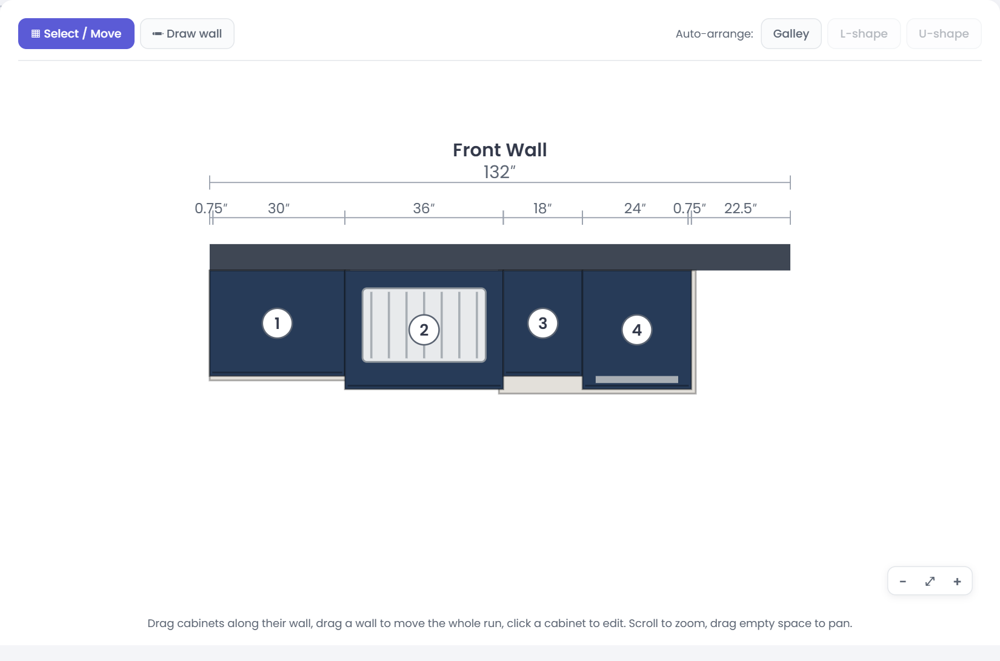
Top View of a straight run. Each segment — cabinet, filler, and applied panel — is dimensioned, and they sum to the wall length.
Navigating
Drag a cabinet along its wall to move it; click it to edit.
Drag a wall slab to move the whole run; wall ends snap together at corners.
Scroll to zoom (toward the cursor); drag empty space to pan. Use the −/⤢/+ buttons to zoom out, fit, or zoom in.
Building the layout
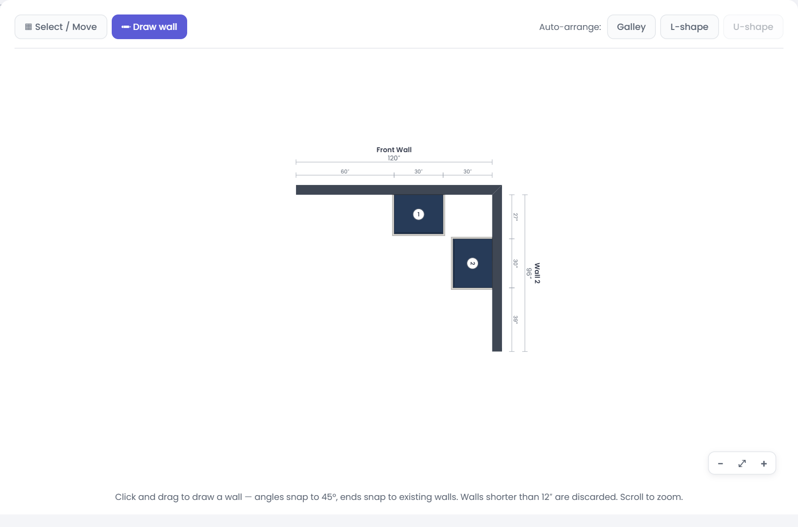
The toolbar: Select / Move, Draw wall, and one-click Auto-arrange presets.
Draw wall → click-drag to draw a wall anywhere; angles snap to 45° and ends snap to existing walls.
Select a wall to reveal a properties bar (name, length, height, thickness, island, ↻ 45° rotate, ⇄ Flip, and Remove).
8. Corners — please read
Where two walls meet, cabinets from both runs would physically collide in the corner. CabDesign prevents this
automatically by reserving a dead corner — a hatched, blocked-off zone that regular cabinets
cannot enter.
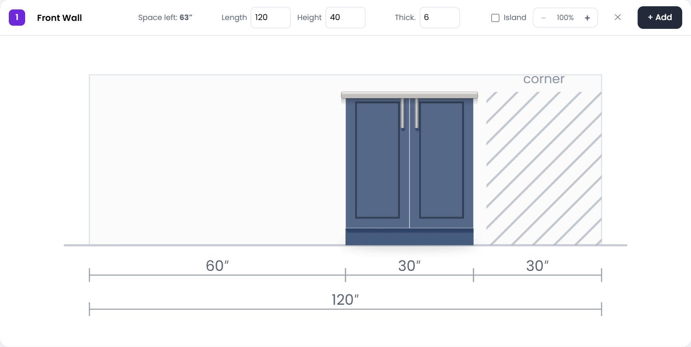
In the Walls view the reserved corner is shown as a hatched “corner” zone. Regular cabinets stop short of it.
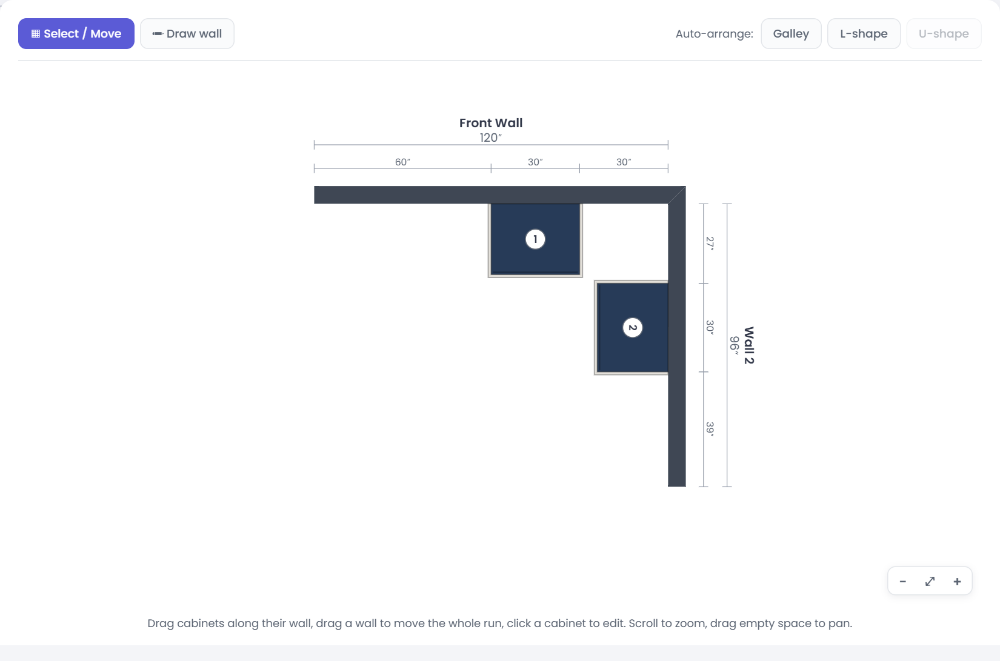
In plan, both walls hold their cabinets back from the corner so nothing overlaps.
How the reserve is sized
Each wall reserves enough to clear the depth of the nearest cabinet on the other wall
(at least a standard 24″), plus 3″ for a corner filler. So a standard run reserves about 27″,
and a deep 27″ grill makes the perpendicular wall reserve about 30″. It recalculates whenever you change a
cabinet's depth.
Your three corner options
Dead corner Leave the reserved zone empty — the default, safe option.
Blind corner Add a Blind Corner Base — it drops into the reserved zone, with a working door on one side and a blind panel toward the corner. A cabinet can't butt right against its blind face, so a 3″ filler is placed automatically between it and the run on the adjoining wall.
Corner cabinet Add a Corner Base (Lazy Susan) — it fills the corner and is accessible.
Fillers belong in the corner
Real corner installations need a filler between the corner and the first cabinet so the doors and
drawers clear the adjoining wall. That's why each wall reserves an extra 3″. Base and wall fillers are
allowed to be placed into the reserved corner zone — drag a filler from the Fillers & Trim tab into the
hatched space to close the gap. (Regular cabinets cannot enter it; only corner cabinets, blind corners, and fillers can.)
Who owns the corner?By default the corner stays dead on both sides. If you place a blind/corner cabinet on a wall, that wall owns the corner and the adjoining wall yields. To swap which wall runs into the corner, use ⇄ Flip or reorder/redraw the walls.
9. Applied panels & fillers
Applied end panels
Turn on Applied ends → Left / Right in the cabinet editor to add a finished end panel where a
cabinet end is exposed (e.g., at the end of a run). Each adds 0.75″ to the cabinet's overall width and is priced
at $36/sq ft (panel height excludes the 4″ toe kick).
Applied back panels (islands)
Cabinets on an island automatically receive a finished back panel (the back
is exposed). Panels are split into pieces of 48″ maximum and priced the same $36/sq ft. On the report, back
panels are summed into a single line.
Fillers
Base and wall fillers (1″–8″ wide, $10/inch) are shallow 4″ pieces that auto-outset so their
face lines up flush with the neighboring cabinet fronts. Use them to take up leftover space in a run or to fill
corner clearance.
10. Islands
To make an island or peninsula, set a wall's Thickness to 0 or tick the Island
box. The physical wall disappears (it shows as a dashed guide in the Top View that you can still drag), and every
cabinet on it gets a finished applied back panel automatically. Combine with applied ends on the outer cabinets
for a fully finished freestanding island.
11. Pricing
Open Pricing (top toolbar) to view and edit the price formula for every cabinet. Formulas use W, D, and H in inches.
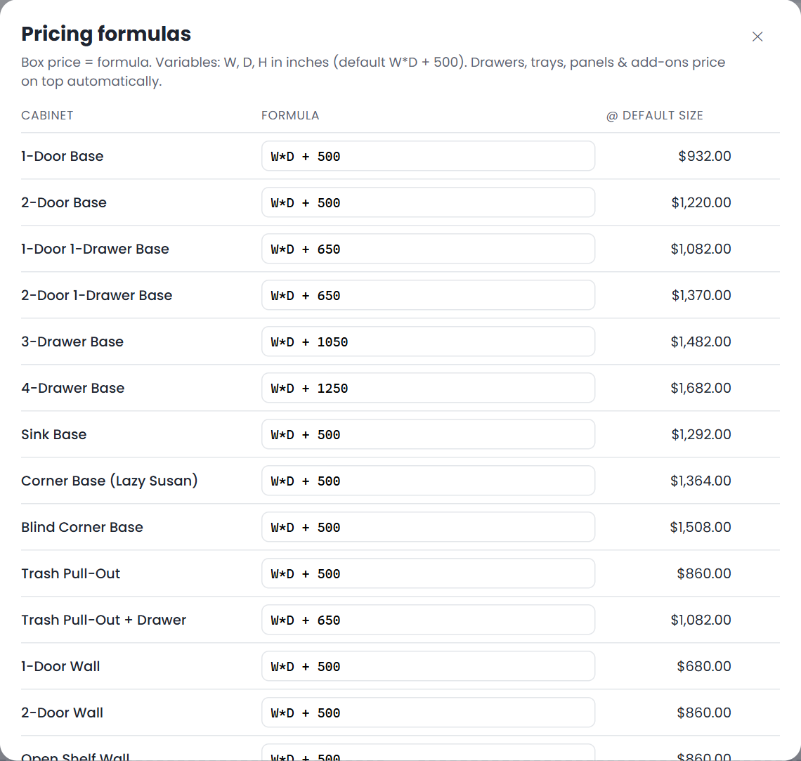
Every cabinet's box formula, editable, with the price at its default size.
The standard box price is W*D + 500.
Drawers are baked into the formula: +$150 per top drawer, +$200 per larger drawer. So a 1-door-1-drawer is W*D + 650, a 3-drawer bank is W*D + 1050, a 4-drawer is W*D + 1250.
The large 4-door grill and griddle cabinets add $100 (W*D + 600).
Priced on top automatically: pull-out trays ($159 each), applied end & back panels ($36/sq ft), and fillers ($10/inch).
Appliances are visual only and not priced.
Edit any formula to override it; the ↺ button resets it to default.
12. Settings — size limits
Open Settings to set the allowed minimum/maximum width and depth for each cabinet. Leave a field blank to use the default (shown as the placeholder). These limits constrain the editor's steppers.
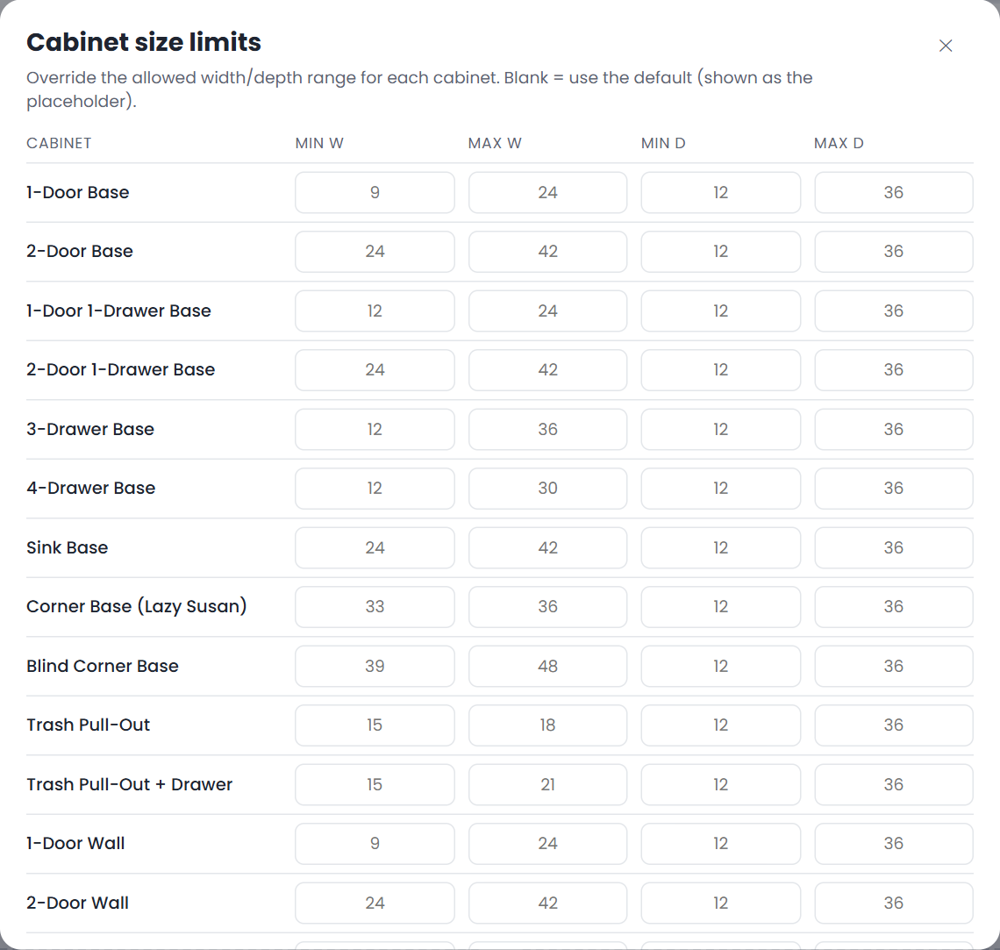
Per-cabinet size limits. Overrides persist in your browser.
13. 3D view & photo render
The 3D tab builds an orbitable model of your design from the same data. Drag to orbit, scroll to zoom, right-drag to pan.
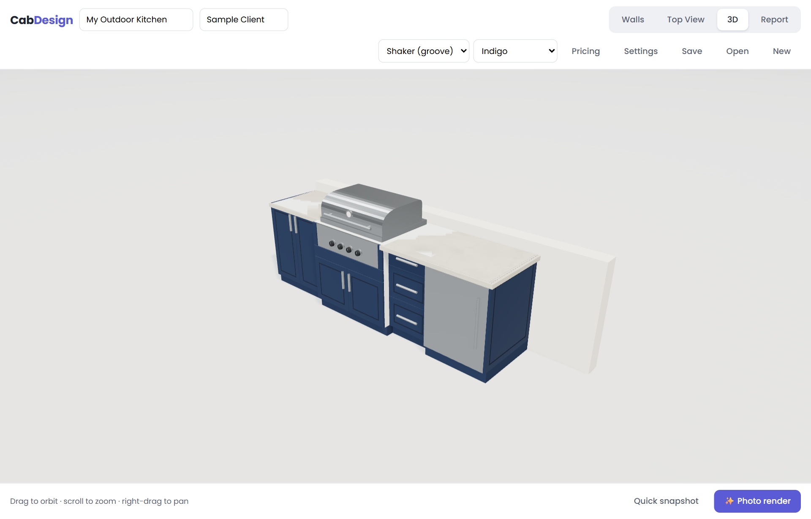
The real-time 3D view.
Quick snapshot grabs the current view for the report instantly.
✨ Photo render produces a ray-traced photographic image from your current camera angle — it refines progressively; download it or send it to the report.
TipFor an island/counter look, set the wall height to ~36–40″ so the 3D scene reads as a kitchen rather than a tall room.
14. The report
The Report tab assembles a printable package: a cover (with your saved 3D render), the floor plan, lettered wall elevations with callout numbers, and an itemized estimate.
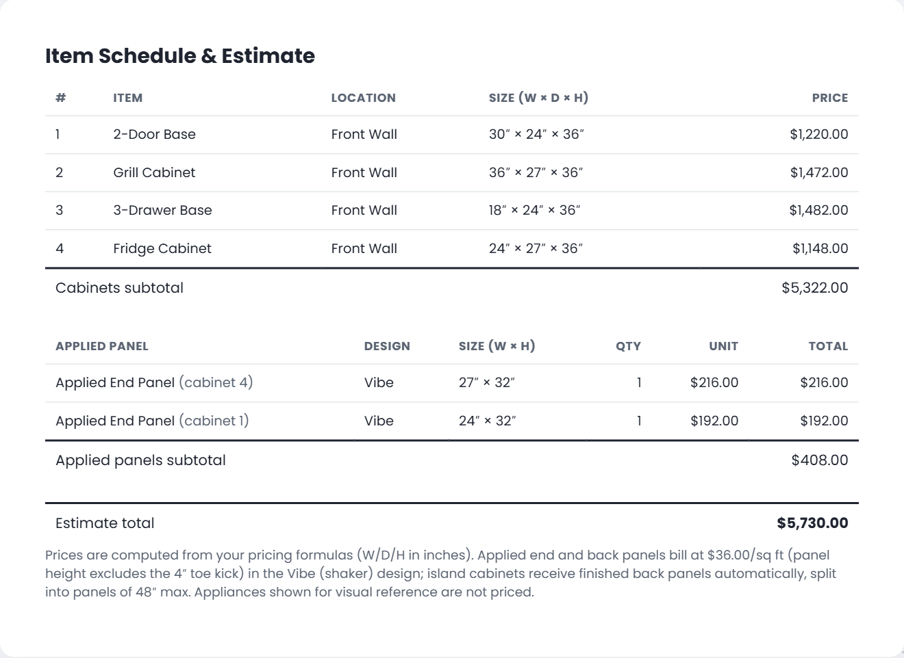
The estimate: cabinets, then applied panels (end panels grouped by size with quantities and the cabinet numbers they belong to; back panels summed), then the total.
Click Print / Save as PDF to produce the deliverable using your browser's print dialog.
15. Saving & sharing
Save downloads the design as a .cabdesign.json file.
Open loads a saved file.
New starts a fresh design (your current one stays in the browser until replaced).
16. Tips & best practices
Build the wall layout first (Auto-arrange or Draw wall), then fill each wall with cabinets.
At every corner, decide: dead corner, blind corner, or lazy susan — and add a filler for door/drawer clearance.
Don't end a run with a fridge alone — add an end-cap support cabinet so the countertop is supported.
Use applied ends on exposed cabinet sides and let islands add back panels automatically.
Set realistic size limits in Settings so nobody specs a cabinet you can't build.
Save a photo render to the report before printing for a polished client presentation.